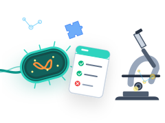
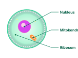
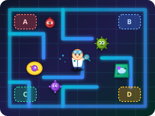
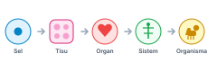
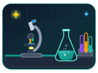

Pengembaraan Kampus Sains ARSelNel
Terokai kampus sains 2D interaktif, kumpul 10 burger rahsia, jawab soalan biologi sel dan buka pintu gerbang penamat!

Pilih Permainan Kuiz
Pilih cabaran interaktif mengikut topik sains untuk menguji pemahaman anda.
Labelkan Organel
Tarik dan lepas nama organel pada gambar sel haiwan dan tumbuhan dengan betul.

Maze Chase: Misi Sel Haiwan & Tumbuhan
Terokai maze 2D, cari jawapan yang betul dan elakkan virus yang mengejar anda! Uji pengetahuan tentang sel haiwan dan sel tumbuhan melalui 10 cabaran interaktif.

Susun Organisasi Kehidupan
Susun urutan organisasi kehidupan bermula dari sel, tisu, organ, sistem hingga organisma.

Kuiz Saintis Muda
Jawab soalan objektif rawak tentang keseluruhan bab sel dalam masa terpantas.
Misi Makmal Sains
Bantu cikgu mengemas makmal sains! Terokai makmal 2D, elakkan halangan, kumpulkan 10 peralatan dan jawab soalan tentang sel haiwan serta sel tumbuhan sebelum membuka pintu keluar.
